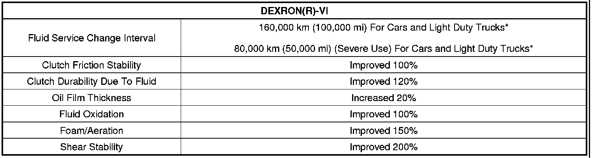
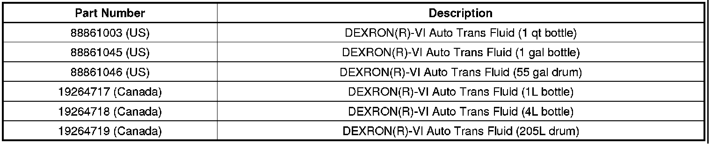

A/T - DEXRON(R)-VI Fluid Information
INFORMATIONBulletin No.: 04-07-30-037E
Date: April 07, 2011
Subject: Release of DEXRON(R)-VI Automatic Transmission Fluid (ATF)
Models:
2008 and Prior GM Passenger Cars and Light Duty Trucks
2003-2008 HUMMER H2
2006-2008 HUMMER H3
2005-2007 Saturn Relay
2005 and Prior Saturn L-Series
2005-2007 Saturn ION
2005-2008 Saturn VUE with 4T45-E
2005-2008 Saab 9-7X
Except 2008 and Prior Chevrolet Aveo, Equinox
Except 2006 and Prior Chevrolet Epica
Except 2007 and Prior Chevrolet Optra
Except 2008 and Prior Pontiac Torrent, Vibe, Wave
Except 2003-2005 Saturn ION with CVT or AF23 Only
Except 1991-2002 Saturn S-Series
Except 2008 and Prior Saturn VUE with CVT, AF33 or 5AT (MJ7/MJ8) Transmission Only
Except 2008 Saturn Astra
Attention:
DEXRON(R)-VI Automatic Transmission Fluid (ATF) is the only approved fluid for warranty repairs for General Motors transmissions/transaxles requiring DEXRON(R)-III and/or prior DEXRON(R) transmission fluids.
Supercede:
This bulletin is being revised to update information. Please discard Corporate Bulletin Number 04-07-30-037D (Section 07 - Transmission/Transaxle).
MANUAL TRANSMISSIONS / TRANSFER CASES and POWER STEERING
The content of this bulletin does not apply to manual transmissions or transfer cases. Any vehicle that previously required DEXRON(R)-III for a manual transmission or transfer case should now use P/N 88861800. This fluid is labeled Manual Transmission and Transfer Case Fluid. Some manual transmissions and transfer cases require a different fluid. Appropriate references should be checked when servicing any of these components.
Power Steering Systems should now use P/N 9985010 labeled Power Steering Fluid.
Consult the Parts Catalog, Owner's Manual, or Service Information (SI) for fluid recommendations.
Some of our customers and/or General Motors dealerships/Saturn Retailers may have some concerns with DEXRON(R)-VI and DEXRON(R)-III Automatic Transmission Fluid (ATF) and transmission warranty claims. DEXRON(R)-VI is the only approved fluid for warranty repairs for General Motors transmissions/transaxles requiring DEXRON(R)-III and/or prior DEXRON(R) transmission fluids (except as noted above). Please remember that the clean oil reservoirs of the J-45096 - Flushing and Flow Tester machine should be purged of DEXRON(R)-III and filled with DEXRON(R)-VI for testing, flushing or filling General Motors transmissions/transaxles (except as noted above).
DEXRON(R)-VI can be used in any proportion in past model vehicles equipped with an automatic transmission/transaxle in place of DEXRON(R)-III (i.e. topping off the fluid in the event of a repair or fluid change). DEXRON(R)-VI is also compatible with any former version of DEXRON(R) for use in automatic transmissions/transaxles.
DEXRON(R)-VI ATF
General Motors Powertrain has upgraded to DEXRON(R)-VI ATF with the start of 2006 vehicle production.
Current and prior automatic transmission models that had used DEXRON(R)-III must now only use DEXRON(R)-VI.
All 2006 and future model transmissions that use DEXRON(R)-VI are to be serviced ONLY with DEXRON(R)-VI fluid.
DEXRON(R)-VI is an improvement over DEXRON(R)-III in the following areas:

* These ATF change intervals remain the same as DEXRON(R)-III for the time being.
2006-2008 Transmission Fill and Cooler Flushing
Some new applications of the 6L80 six speed transmission will require the use of the J 45096 - Flushing and Flow Tester to accomplish transmission fluid fill. The clean oil reservoir of the machine should be purged of DEXRON(R)-III and filled with DEXRON(R)-VI.

Parts Information

Disclaimer